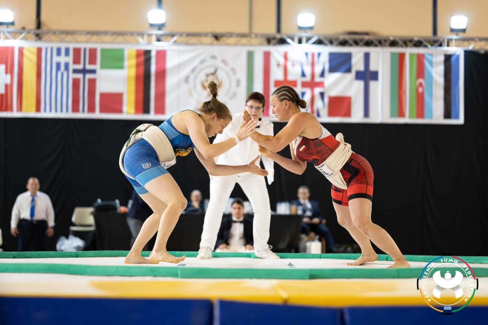

Το Σούμο δεν είναι απλώς μια φυσική δραστηριότητα ή ένα άθλημα δύναμης. Είναι μια ολιστική εμπειρία που συνδέει σώμα και νου, ενισχύει την αυτοσυγκέντρωση και τη διαχείριση συναισθημάτων και μπορεί να συμβάλλει σημαντικά στην ψυχολογική ανάπτυξη τόσο των παιδιών όσο και των ενηλίκων. Σε αυτό το άρθρο, θα εξετάσουμε πώς το Σούμο επηρεάζει την ψυχολογία, με βάση επιστημονικά ευρήματα και πρακτικές εφαρμογές.
Η συγκέντρωση είναι θεμελιώδης για κάθε αθλητή Σούμο. Κάθε αγώνας απαιτεί πλήρη προσοχή στη στάση, στη θέση των ποδιών και στην κίνηση του αντιπάλου. Το σημαντικότερο είναι η ανάπτυξη της ευαισθησίας που αναπτύσσεται για να εκμεταλλευτεί ο σουμοτόρι τα κλάσματα δευτερολέπτου απώλειας της ισορροπίας του αντιπάλου. Η επιστήμη της ψυχολογίας αναγνωρίζει ότι αθλητικές δραστηριότητες που απαιτούν αυξημένη προσοχή και συντονισμό σώματος-νου βοηθούν στη βελτίωση των γνωστικών λειτουργιών, όπως:
Μελέτες δείχνουν ότι παιδιά που ασκούνται σε πολεμικές τέχνες, όπως το Σούμο, παρουσιάζουν καλύτερες επιδόσεις σε τεστ συγκέντρωσης και προσοχής συγκριτικά με συνομηλίκους που δεν ασκούνται συστηματικά.
Η αυτοπεποίθηση είναι άρρηκτα συνδεδεμένη με τη φυσική ικανότητα, την εκπαίδευση και τη σταθερή πρόοδο. Στο Σούμο, οι αθλητές:
Αυτή η συνεχής αίσθηση προόδου ενισχύει την αυτοεκτίμηση. Έρευνες στον χώρο των πολεμικών τεχνών δείχνουν ότι η συμμετοχή σε αθλήματα που συνδυάζουν φυσική δύναμη και πνευματική ετοιμότητα μειώνει αισθήματα ανασφάλειας και κοινωνικού άγχους.
Σχετικά με τη διαχείριση της ήττας: το παιδί δεν δέχεται χτυπήματα. Είτε θα βγει έξω από τον αγωνιστικό χώρο είτε θα πέσει. Η ήττα στο Σούμο δεν έχει το ίδιο βάρος με την ήττα σε ένα μαχητικό άθλημα. Ο αθλητής δεν κινδυνεύει να πάει στα επείγοντα. Θα σηκωθεί, θα χαιρετήσει, θα χαμογελάσει και κανένας δεν θα πανηγυρίσει έξαλλα. Στο Σούμο η έννοια του σεβασμού έχει μεγάλη βαρύτητα.
Το Σούμο απαιτεί ψυχραιμία υπό πίεση. Η πρακτική σε περιβάλλοντα αγώνα:
Μελέτες ψυχολογίας δείχνουν ότι οι αθλητές πολεμικών τεχνών παρουσιάζουν χαμηλότερα επίπεδα κορτιζόλης και υψηλότερα επίπεδα ενδορφινών, βελτιώνοντας τη διάθεση και μειώνοντας την ευαισθησία σε αγχώδεις καταστάσεις.
Αν και το Σούμο είναι ατομικό άθλημα, οι προπονήσεις περιλαμβάνουν ζευγάρια, τεχνικές άσκησης σε ομάδα και αλληλοβοήθεια. Αυτό διδάσκει:
Τα παιδιά που μαθαίνουν Σούμο σε μικρή ηλικία αναπτύσσουν καλύτερη κοινωνική προσαρμογή και δεξιότητες επικοινωνίας.
Η ήττα και η αποτυχία είναι αναπόφευκτες στον αθλητισμό. Στο Σούμο, κάθε αγώνας διδάσκει ότι:
Αυτά τα μαθήματα μεταφέρονται και στην καθημερινή ζωή, βελτιώνοντας την ψυχική ανθεκτικότητα και τη διαχείριση δύσκολων καταστάσεων.
Για τα παιδιά, το Σούμο παρέχει:
Το Σούμο είναι πολύ περισσότερα από ένα άθλημα δύναμης. Η ψυχολογική διάσταση του Σούμο:
Για κάθε αθλητή ή μαθητή, η συμμετοχή στο Σούμο δεν είναι μόνο σωματική άσκηση, αλλά ένα εργαλείο ψυχολογικής ανάπτυξης και προσωπικής εξέλιξης. Η εμπειρία αυτή διδάσκει πώς να αντιμετωπίζουμε δυσκολίες, να συνεργαζόμαστε, να στηρίζουμε άλλους και να γινόμαστε καλύτεροι άνθρωποι μέσα από το σώμα και τη δράση.
